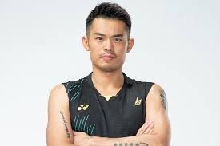
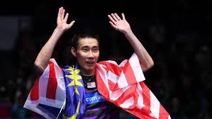
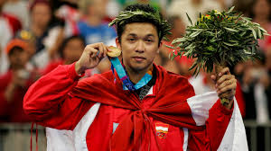
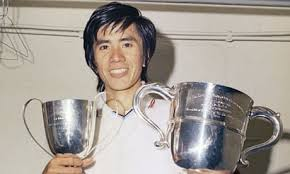
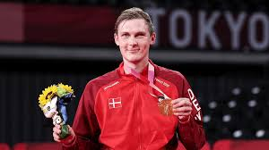
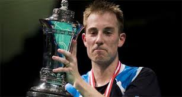
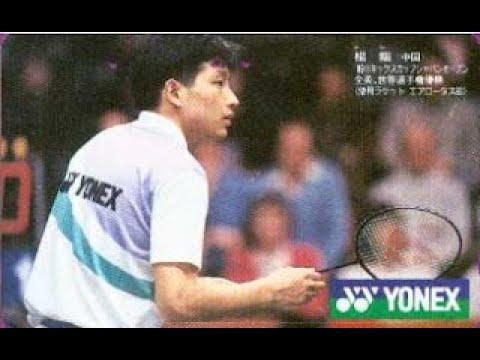
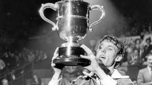

Lin Dan is widely considered the greatest badminton player in history. He won 2 Olympic gold medals (2008, 2012) and 5 World Championships, a record unmatched in men’s singles. Known for his explosive speed, mental strength, and ability to perform in high-pressure matches, he often dominated rivals like Lee Chong Wei in major finals. His rivalry with Lee is one of the most famous in all of sports.

Lee Chong Wei is one of the most consistent players ever, holding the world No. 1 ranking for over 300 weeks. He reached three Olympic finals (2008, 2012, 2016) but narrowly missed gold each time, often losing to Lin Dan. Despite that, he won numerous Super Series titles and is admired for his speed, precision, and incredible consistency at the highest level.

Taufik Hidayat was known for his elegant playing style and one of the best backhands in badminton history. He won the 2004 Olympic gold medal and the 2005 World Championship, defeating top opponents with technical brilliance rather than pure power. He was unpredictable, creative, and extremely skilled in shot-making.

Rudy Hartono dominated badminton in the 1960s and 70s. His most famous achievement is winning the All England Open Championships eight times, including seven consecutive titles. At the time, the All England was considered the unofficial world championship, making his record one of the most impressive in the sport.

Chen Long was a dominant defensive player known for his patience and consistency. He won the 2016 Olympic gold medal, defeating Lee Chong Wei in the final, and also secured multiple World Championship titles. He was especially strong in long rallies and difficult match situations.

Viktor Axelsen is one of the strongest modern players physically, standing out with his height, power, and attacking style. He won Olympic gold in 2020 and multiple World Championships. Axelsen represents the new era of badminton where fitness and aggressive play are key.

Peter Gade was one of Europe’s greatest players and reached world No. 1 in the early 2000s. He was known for his creativity, deception, and tactical intelligence. Although he never won an Olympic or World Championship gold, he consistently competed at the top level against dominant Asian players.

Yang Yang was one of China’s first great badminton legends in the late 1980s. He won multiple World Championships and All England titles, helping establish China as a badminton powerhouse. His technical control and footwork were ahead of his time.

Morten Frost, often called “Mr. Badminton,” was a top player in the 1980s. He reached multiple World Championship finals and dominated European badminton. Although he never won a World Championship or Olympic gold, his consistency and sportsmanship made him a legend.

Chen Hong was a top Chinese player in the early 2000s, known for his powerful attacking game and strong smashes. He won major titles including the All England Championships (2002) and helped China maintain dominance in men’s singles during that era.